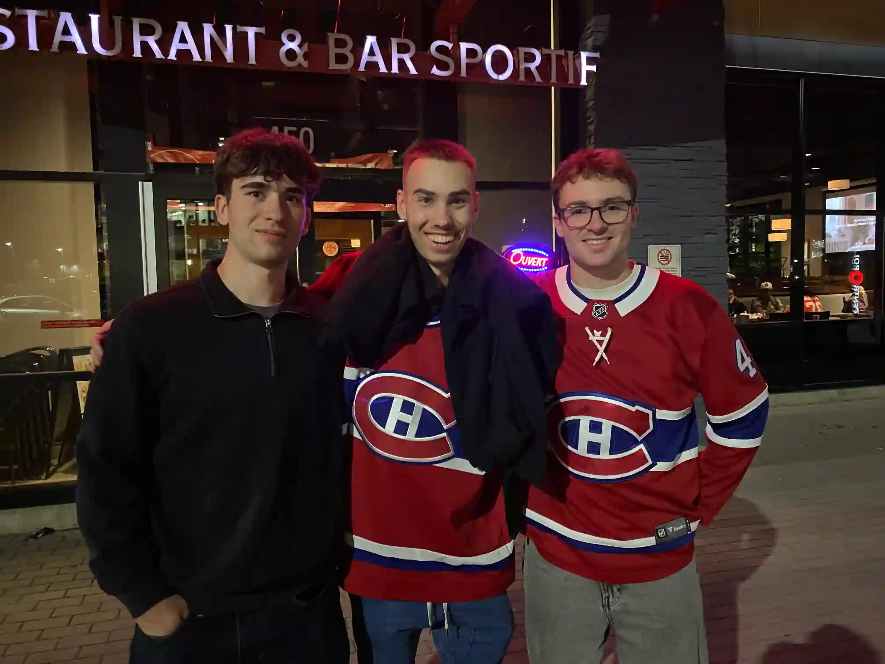

Retour en haut
J'ai crée 9 vidéos pour Solus Hydroponics. Ces capsules présentent les produits et leurs usages dans des situations réelles. Voici une des vidéos qui présentent comment utilisé les produits Solus pour le nettoyage d'outils.
Solus Hydroponics est une entreprise spécialisée dans les solutions hydroponiques qui offre des produits conçus pour optimiser la croissance des plantes et l'entretien des systèmes de culture. L'entreprise met l'accent sur des solutions efficaces, sécuritaires et écologiques afin d'aider les producteurs à maintenir des installations propres, favoriser la santé des plantes et améliorer les rendements agricoles.
Visitez le site web de Solus hydroponics pour regarder l'ensemble de mes vidéos et en savoir d'avantage sur Solus : https://solus-hydroponics.ca/usages/
J'ai adoré mon stage de 2 semaines chez Solus Hydroponics. Mon mandat était de faire le montage de 9 vidéos en utilisant le footage qu'il avait déjà tourner. Je devais créer des vidéos qui décrivait les différentes étapes de nettoyages d'un produit comme le
J'avais reçu par courriel le texte à ajouter pour chacune des vidéos. Par exemple, pour la vidéo du nettoyage d'outils, mes étapes étaient :
Ensuite, je devais ajouter une petite musique d'arrière plan. Enfin, je devais traduire tout le texte des
9 vidéos en anglais.
Mes deux maîtres de stage étaient vraiment
professionnels et c'était
vraiment
enrichissant de travailler
pour eux. Après le stage, ils nous ont invités aux Boston Pizza pour nous remerciez de notre travail.

C'était la première game de la série Canadiens contre Caroline en 2026.
Monteur Vidéo, Monteur Sonore, Animateur 2D
DaVinci Resolve
Montage vidéo, Montage sonore, étalonnage
Google Traduction
Pour la traduction des textes en anglais.
Retour en haut